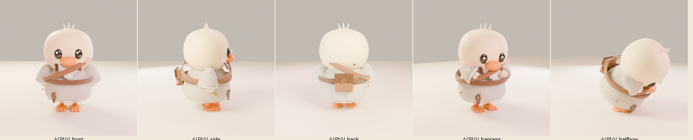

MindOn · for collaborators
마음온 작업자 안내
마음온(MindOn)은 로그인 없이 들어와 경내를 걷고, 염불을 듣고, 합장하고, 108배를 하고, 연잎 위에서 숨을 고르는 온라인 명상 사찰입니다. 이 페이지는 캐릭터·브랜드 작업에 참여하는 분이 처음 읽는 안내문입니다. 모든 생김새의 기준은 컨셉 보드 「심덕」이고, 파일의 기준은 아래 저장소입니다.
1. 파일은 여기서 받습니다
에셋 저장소
GLB·로더·문서·렌더가 전부 있는 본진. 한 번 받아 두고 git pull로 갱신합니다.
캐릭터 시트·뷰어
심덕이 GLB를 브라우저에서 여섯 동작으로 돌려 보고, 도반 친구들 렌더를 봅니다.
characters.htmlgit clone https://github.com/heropapa/mindon
cd mindon
python -m http.server 8000 # 그 다음 브라우저에서 http://localhost:8000/loader/viewer.html저장소가 비공개인 동안은 GitHub 아이디를 운영자에게 알려 협업자로 초대받아야 받을 수 있습니다.
2. 지금 있는 캐릭터

| species | 이름 | 특징 |
|---|---|---|
simdeok | 심덕이 (오리) | 크림 몸, 큰 눈, 주황 부리·물갈퀴, 잔털 3·꽁지깃 3, 회색 승복 |
deerdeer | 디어디어 (사슴) | 연갈색 몸, 크림 주둥이, 큰 귀, 작은 뿔, 발굽 |
fox | 여우 스님 | 주황 몸, 흰 주둥이, 끝이 검은 귀, 염주, 갈색 승복 |
cat | 고양이 도반 | 회색 몸, 흰 입가, 분홍 코, 수염 |
turtle | 거북이 도반 | 초록 몸, 연두 입가, 걸망 대신 등딱지 |
sparrow | 참새 도반 | 갈색 몸, 크림 턱, 주황 부리, 가는 다리 |
파일은 characters/mindon-<species>.glb(원본)과 -lite.glb(다른 방문자용, 정점 약 2만)입니다. 모두 같은 뼈대라 로더 하나로 움직입니다.
3. 작업할 때 꼭 지킬 것
- 보드가 기준. 문서와 보드가 다르면 보드가 맞습니다. 종교색은 옅게, 한자·卍 같은 종단 상징은 쓰지 않습니다.
- 뼈대 노드 10개의 이름과 피벗을 바꾸지 않습니다. root · hips · torso · neck · wingL · wingR · legL · legR · eyeL · eyeR. 메시는 반드시 이 노드 아래에 매답니다. 평평하게 나열하면 합장만 되고 큰절·가부좌가 안 됩니다.
- 애니메이션은 넣지 않습니다. 걷기·가부좌·연잎 숨쉬기·합장(반배)·큰절은 로더가 노드를 돌려 만듭니다.
- 키 1.53~1.60, 발바닥 y=0, 원점은 두 발 사이, 스케일 1. 정점은 원본 6만·라이트 2.2만 이하, 파일은 2.5MB·1MB 이하.
- 옷은 기본 법복: 회색 승복, V자 깃과 흰 동정은 턱 아래 어깨선에서 시작해 가슴에서 겹침, 갈색 가방끈 하나, 옆구리 납작 매듭, 걸망. 격자 가사·둥근 배꼽 매듭·몸에서 뜨는 띠는 안 됩니다.
- 재질은 glTF 기본 PBR(Base Color·Roughness·Metallic)만. 시제품이 three.js r128이라 sheen 같은 확장은 안 보입니다.
- 보드에 없는 동물(토끼·곰·판다 등)은 운영자 승인 뒤에만 추가합니다.
4. 납품 방법
- 파일 이름을 규칙대로 맞춥니다:
characters/mindon-<species>.glb,-lite.glb,characters/renders/<species>_front|side|back|hapjang.png(640×640, 한지색 바탕), 소스는characters/src/. loader/viewer.html로 여섯 동작을 모두 눌러 확인합니다. 큰절에서 몸이 안 숙여지면 메시가 torso 아래에 없는 것, 합장에서 손이 안 모이면 wing 피벗이 다른 것입니다.- 브랜치를 만들어 커밋하고 PR을 엽니다. PR 설명에 바꾼 점과 렌더 4장을 넣습니다.
- 검수는 규격서 10장의 체크리스트로 합니다. 통과하면 main에 합쳐집니다.
5. 납품 전 체크
- 노드 10개 이름이 같고 메시가 그 아래에 있음
- 키·발바닥·원점·스케일 규격 안
- 깃이 턱 아래에서 시작, 띠가 몸에 밀착, 어떤 동작에서도 뚫림 없음
- 정점·파일 크기 한도 안, 재질은 PBR 기본값
- 뷰어에서 여섯 동작 정상, 콘솔 오류 없음
- 렌더 4장 + 소스 포함, 파일 이름 규칙대로
6. 로더를 쓰는 개발자라면
<script src="https://cdnjs.cloudflare.com/ajax/libs/three.js/r128/three.min.js"></script>
<script src="https://cdn.jsdelivr.net/npm/three@0.128.0/examples/js/loaders/GLTFLoader.js"></script>
<script src="loader/duck-glb.js"></script>
<script>
const duck = new MaumDuckGLB('characters/mindon-simdeok.glb', d => scene.add(d.root));
duck.setPose('hapjang', false, () => duck.setPose('stand')); // stand walk sit breathe hapjang bow
// 매 프레임: duck.update(dt)
</script>7. 연락
질문·제안은 저장소 Issue에 남기거나 운영자에게 전합니다. 보드와 다른 방향으로 가고 싶으면 작업 전에 먼저 물어봐 주세요. 기준은 언제나 보드입니다.